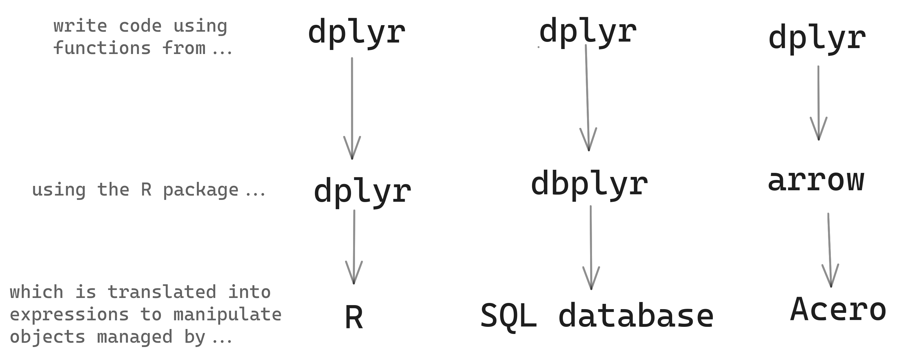

pums_person <- open_dataset("./data/person")4 Data Manipulation
In the previous chapter, we took a look at an overall view of working with Arrow, but now we’re going to take a closer look at how to use Arrow to efficiently transform and manipulate data using familiar dplyr syntax and approaches borrowed from the tidyverse. We’re not going to go into too much detail about how to use dplyr in this book, but if you want to learn more or need a refresher, we recommend taking a look at the dplyr documentation, or R for Data Science.
When we introduced the PUMS dataset in the previous chapter, we saw that in its raw CSV form it takes up almost 90GB of space on disk. As is common in data science, the raw data we start with needs some cleaning before we can do meaningful analysis.
If you want to see a walkthough of how we cleaned the raw dataset, you can find some key examples that are useful to know about in Section 5.4, and the the rest of the (somewhat repetitive) initial steps can be found in a script in this book’s repository, so it doesn’t distract from the task of learning about data manipulation in arrow. We include some examples of the final stages in this chapter to give you a taste of how this can be done.
In this chapter, we’ll focus on data manipulation with the cleaned up version of the data. You’ll learn what approaches to take when manipulating larger-than-memory datasets, and how arrow creates queries to run against the data instead of pulling everything into the R session.
4.1 Building queries
We can point at all of the files and query them together as a single dataset made up of multiple Parquet files.
Although a lot of the cleaning has been done — we’ve recoded all of the character and factor variables, replaced sentinels1 for missing values with actual missing values, etc. — there are still some data transformations that we will demonstrate using Arrow for throughout the rest of this chapter and book.
You can create data analysis pipelines in arrow similarly to how you would using dplyr. For example, if you wanted to calculate the mean age of individuals from Washington across the years, you could run:2
pums_person |>
filter(location == "wa") |>
group_by(year) |>
summarize(mean_age = sum(AGEP * PWGTP) / sum(PWGTP)) |>
collect()arrow uses lazy evaluation: this means that until we call collect() to return the results to our R session, no data has been read into R and no calculations have been performed. Instead, we’ve just built a query, which describes the calculations that we want to run.
You can see this by inspecting the pums_wa_age object.
pums_wa_age <- pums_person |>
filter(location == "wa") |>
group_by(year) |>
summarize(mean_age = sum(AGEP * PWGTP) / sum(PWGTP))
pums_wa_ageFileSystemDataset (query)
year: int32
mean_age: double (divide(cast(..temp0, {to_type=double, allow_int_overflow=false, allow_time_truncate=false, allow_time_overflow=false, allow_decimal_truncate=false, allow_float_truncate=false, allow_invalid_utf8=false}), cast(..temp1, {to_type=double, allow_int_overflow=false, allow_time_truncate=false, allow_time_overflow=false, allow_decimal_truncate=false, allow_float_truncate=false, allow_invalid_utf8=false})))
See $.data for the source Arrow objectThe output above shows that this object is a query on a dataset. It shows the schema of the dataset, and which columns the data is being filtered and sorted on, as well as the sort direction. At this point, no calculations have been made and won’t be until we run collect() to execute the query and pull the results back into R.
4.2 A few more cleaning tasks
There are still a number of cleaning tasks that we should do on the dataset. With the additional processing power provided by arrow, it’s possible to do these even at analysis time — which is helpful for cases where we might want to preserve the values from the underlying dataset (e.g. if we want to analyze the different wording of values over time), but when we run aggregations and queries, we want to collapse those and just run our analyses on the transformed data.
4.2.1 Relabeling values
It’s not unusual for large datasets like PUMS, which have been collected over many years, to contain inconsistencies between how variables are reported in different partitions. One example of this is the CIT column, which contains data about survey respondents’ US citizenship. If we compare the unique values in this column from the first year in our dataset, 2005, and a later year in the data, 2021, we can see that some of the reported labels have changed.
pums_person |>
filter(year == 2005) |>
distinct(CIT) |>
collect()pums_person |>
filter(year == 2021) |>
distinct(CIT) |>
collect()In this example, despite the different labels, the values are directly analogous: the response “Yes, born in the US” in 2005 is equivalent of “Born in the United States” in 2021. If we want to use this column in an analysis, we’ll need to clean it up to make sure that the values match. We can use the dplyr function case_when() to replace the older values with the new one, and check we’ve captured every possibility across the whole dataset (and not just the years 2005 and 2021) by running distinct() without filtering the data beforehand.
pums_person |>
mutate(
CIT = case_when(
CIT == "Yes, born in the US" ~
"Born in the United States",
CIT == "Yes, naturalized" ~
"U.S. citizen by naturalization",
CIT == "Not a citizen" ~
"Not a U.S. citizen",
CIT == "Yes, born abroad of American parent(s)" ~
"Born abroad of U.S. citizen parent or parents",
CIT == "Yes, born in Puerto Rico, etc." ~
paste0(
"Born in Puerto Rico, Guam, the U.S. Virgin Islands,",
" or Northern Marianas"
)
)
) |>
distinct(CIT) |>
collect()We might also want to create new columns for our analyses. For example, let’s say we want to compare the relative ages of survey respondents who were self-employed versus other categories. We can use the stringr function str_detect() to create a new column, which contains TRUE if the string “Self-employed” is present in the COW (category of work) columns and FALSE if it is now.
library(stringr)
pums_person |>
mutate(COW = as.character(COW)) |>
mutate(self_employed = str_detect(COW, "Self-employed")) |>
group_by(year, self_employed) |>
summarize(mean_age = sum(AGEP * PWGTP) / sum(PWGTP)) |>
arrange(year, self_employed) |>
collect()Now we’ve seen that we can work with familiar dplyr and tidyverse syntax on this large dataset using arrow, we’re going to talk more about exactly how this works.
4.3 Workflows for larger datasets
Why does arrow avoid computing on the data until you explicitly tell it to? While you can work with Arrow data in memory, the biggest benefits of arrow come from its ability to work with data that is too big to fit into memory. After all, if the data were small enough to fit into memory, you would have many more tools available to you, both in R itself and in other packages. Since arrow is designed to work with larger-than-memory datasets, and calculations on such large data may be slow to complete, you should be clear about when you want to run such a query. The package doesn’t want to surprise you by crashing your session by running out of memory.

If the output of your query is larger-than-memory, you won’t be able to return it to your R session without crashing it, and so this may require a different approach to validating your results.
Let’s say you want to create a new query which looks at whether individuals over the age of 18 in the data have spent time in higher education or not. You might start off with something like this:
higher_ed_string <- "(Bach|Mast|Prof|Doct|college|degree)"
higher_ed <- pums_person |>
filter(AGEP > 18) |>
mutate(higher_education = grepl(higher_ed_string, SCHL))You can preview your results using head() to only return the first few rows, and calling select() will speed things up further, as arrow will only read into memory the requested columns.
head(higher_ed, 20) |>
select(SCHL, higher_education) |>
collect()Alternatively, if you want a preview of the dataset which contains the number of rows to be returned from your query, as well as preserving the original Arrow data types, you can call glimpse() to show this information.
higher_ed |>
select(SCHL, higher_education) |>
glimpse()FileSystemDataset with 27 Parquet files (query)
1,552,876 rows x 2 columns
$ SCHL <string> "Bachelor's degree", "Doctorate degree", "High school …
$ higher_education <bool> TRUE, TRUE, FALSE, FALSE, TRUE, TRUE, TRUE, TRUE, TRUE…
Call `print()` for query details4.4 Using functions inside dplyr pipelines
A number of dplyr functions allow you to embed other functions in them. mutate() is a prime example of this, where we are changing some data in the data frame using other functions from base R or other packages. Many tidyverse functions will simply work out of the box with arrow queries. For example, as arrow has code that works just like the stringr function str_detect()—which works out if a string is present in a column or not—we can use it in an arrow dplyr pipeline just like we would a standard dplyr pipeline. For more details about how this works, see Section 4.6 below.
higher_ed <- pums_person |>
filter(AGEP > 18) |>
mutate(higher_education = stringr::str_detect(
SCHL,
higher_ed_string)
)You can use these functions with or without namespacing, so either stringr::str_detect() or just str_detect() work.
When we wrote this book, there were 37 dplyr functions and 211 other functions available in arrow—though this number may have increased since! We’ve demonstrated some string operations here; both the base R and stringr flavors are supported. There is also deep support for lubridate functions for working with date and time data.3 If you want to find out which functions are available in arrow, you can view the help page which lists all of the dplyr functions and other function mappings by calling ?acero.
While many functions are implemented in arrow, you aren’t limited by just what is included in the package. Sometimes it is convenient or necessary to write your own functions. For example, you might need to convert the JWMNP (commute time) columns from minutes to hours and have written a function which does this conversion for you. What happens if you then try to run this function in arrow?
time_hours_rounded <- function(mins){
round(mins/60, 2)
}
pums_person |>
select(JWMNP) |>
mutate(commute_hours = time_hours_rounded(JWMNP)) |>
head() |>
collect()Great, this has worked! Arrow is able to look at the body of the time_hours_rounded() function and map the code there to the equivalent code which can be run by Acero.
Let’s now take a look at an example which doesn’t work as easily. The SOCP column in the dataset contains Standard Occupational Classification (SOC) codes, which are in capital letters.
pums_person |>
select(SOCP) |>
distinct() |>
head() |>
collect()If we wanted to convert these into sentence case, with just the first letter of each sentence capitalized, we might look at using the helpful function str_to_sentence() from stringr. However, if we call this, we get an error.
pums_person |>
select(SOCP) |>
mutate(SOCP = stringr::str_to_sentence(SOCP)) |>
distinct() |>
head() |>
collect()Error in `stringr::str_to_sentence()`:
! Expression not supported in Arrow
→ Call collect() first to pull data into R.The error message shows that this expression is not supported in Arrow. This is because there is no Arrow C++ function that is the equivalent of stringr::str_to_sentence() and so it is not supported in the arrow R package. So what should you do if you encounter this?
If the resulting data in your pipeline is small enough, you could pull the data back into R, and then continue your analysis. This isn’t always an option though, so what should you do if your data is still too large to return to R memory? Find out more about this in a few sections when we talk about user-defined functions (Section 8.1).
4.5 Joins
Joins are used to combine data from 2 or more sources, based on columns that these sources have in common. The columns that we want to use to match our data sources are sometimes referred to as join keys.
Let’s say for example, we want to compare the commute time of each person in the dataset to the mean commute time for their state.
We start by creating a reference table of mean commute time by state and year.
mean_commute_time <- pums_person |>
group_by(location, year) |>
summarize(
mean_commute_time = sum(JWMNP * PWGTP, na.rm = TRUE) /
sum(PWGTP)
) |>
collect()
head(mean_commute_time, 5)We can then perform a left join to combine this information with the information in the original datasets.
 The code to accomplish this looks something like this:
The code to accomplish this looks something like this:
pums_person |>
left_join(mean_commute_time, by = c("location", "year")) |>
mutate(commute_diff = mean_commute_time - JWMNP) |>
select(
commute_diff,
commute_time = JWMNP,
mean_commute_time
) |>
head(3) |>
collect()4.5.1 Join keys
One important thing to know about doing joins in arrow is that the data types of the join key columns must match. Let’s say we decided that we want to change the data type of the year column from a 32-bit integer to an 16-bit integer. We can change the column type using cast(), but if we then try to join our reference table, we get an error.
pums_person |>
mutate(year = cast(year, int16())) |>
left_join(mean_commute_time, by = c("location", "year"))|>
head() |>
collect()Error in `compute.arrow_dplyr_query()`:
! Invalid: Incompatible data types for corresponding join field keys: FieldRef.Name(year) of type int16 and FieldRef.Name(year) of type int32The source of the error is in the difference in data types for the year column — we updated it in the main dataset to be an int16() but in the reference table, the year column is still an int32(). We can verify this by using the schema() function.
schema(mean_commute_time)Schema
location: string
year: int32
mean_commute_time: doubleTo be able to perform the join, we must update one or both of the datasets so that the types match. The simplest thing to do in our case is update the data type of the lookup table. We can manually set the schema of the table by converting it to an Arrow Table and setting the schema at the same time.
mean_commute_time_arrow <- arrow_table(
mean_commute_time,
schema = schema(
location = string(),
year = int16(),
mean_commute_time = double()
)
)
schema(mean_commute_time_arrow)Schema
location: string
year: int16
mean_commute_time: double
See $metadata for additional Schema metadataThe data type of the join key in the reference table now matches the data type in our original dataset, and now the join will work.
pums_person |>
mutate(year = cast(year, int16())) |>
left_join(
mean_commute_time_arrow,
by = c("location", "year")
)|>
mutate(commute_diff = mean_commute_time - JWMNP) |>
select(
commute_diff,
commute_time = JWMNP,
mean_commute_time
) |>
head(3) |>
collect()4.6 How does all of this work? Verbs, functions, and arrow objects
The arrow R package contains a dplyr backend, an implementation of dplyr methods and functions that allows you to work with data using the same dplyr functionality you may be accustomed to using with regular R data frames.
How can you write dplyr code that looks like what you’d use when exploring an in-memory data frame and have it automatically be translated to run on a larger-than-memory arrow Dataset? The arrow R package makes use of two defining features of R: S3 methods and non-standard evaluation.
We refer to the various functions in dplyr that operate on one or more data frames—things like select(), filter(), summarize()—as verbs, as they all do actions to the data. In dplyr, these are implemented as generics, which means that they are open to extension by other packages. The dbplyr package, for example, defines methods for select() and the other verbs that operate on different databases. In arrow, there are methods defined for arrow Datasets and Tables, so that when you call dplyr::select(Dataset, ...), the version of select() that is defined for arrow::Dataset is called.
Most functions in R are not generics, however, so arrow can’t solve everything by implementing methods. Instead, inside the arrow methods for dplyr verbs, the arguments you provide are evaluated in a special environment that contains alternative versions of many base R and tidyverse functions. These alternatives don’t immediately execute and return the result; instead, they return arrow Expressions, which capture the intent of your code and express it in a way that can be understood by Acero, the Arrow query engine. This is similar to how dbplyr turns your R code into SQL.

We refer to these alternative versions of R functions that return Expressions as bindings. The arrow R package contains bindings for hundreds of functions, many from base R packages, as well as from tidyverse packages, notably lubridate, stringr, and tidyselect. For a full list of what dplyr verbs and functions have arrow bindings, see ?acero in the package.
4.7 Conclusion
In this chapter we covered manipulating data with data that is larger than memory by using Arrow Datasets. This allowed us to run analyses on datasets that in total are larger than can fit into memory but between clever partitioning and some parts of the way that Arrow executes queries, we can efficiently manipulate this data without needing to get a larger computer or write the piece-meal processing code ourselves. The next chapter will go into more details about how and why datasets work in Arrow for a deeper understanding of the capabilities, caveats, and best practices.
Sentinel may be an unfamiliar term — you could think of it as a placeholder value. It is used in the survey research and database worlds to refer to special values that have a special meaning. For example, you might have an age variable that can take any (positive) integer. But when the age is listed as
-1that means that the data is missing — not that someone is negative years old! This, again, is another example where old customs when CSVs and other text-based formats were the only ways to transport data forced us to do some funky things to communicate some values.↩︎Note, that we might think we could use
summarize(mean_age = mean(AGEP)), but because this dataset has row-level weights, we need to account for that in our analysis to get accurate results.↩︎The 2022 UseR! conference workshop on arrow, “Larger-Than-Memory Data Workflows with Apache Arrow,” by Danielle Navarro, Jonathan Keane, and Stephanie Hazlitt, has some good examples that show more functions being used, including datetime functions. We figured everyone had seen enough of the NYC taxi dataset and chose to use U.S. Census data for examples in this book. This means we can show some more interesting queries and results, but unfortunately, there is no interesting datetime data in it!↩︎